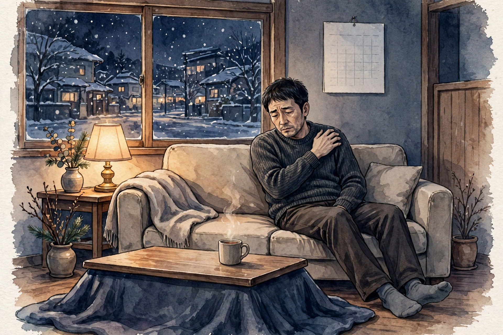
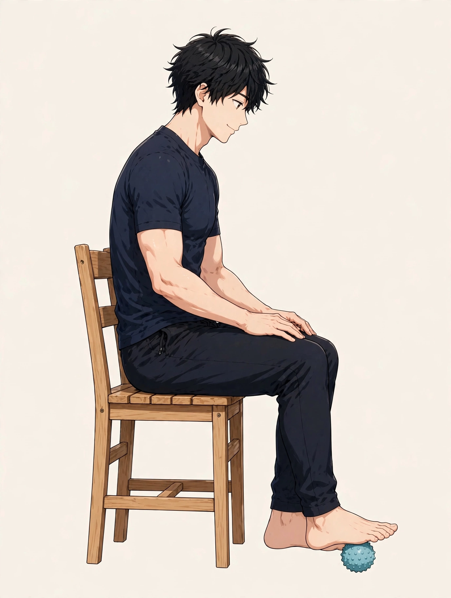

東三国でクリスマス・年末の準備に気になる冷え感
要因の整理とセルフケア、受診の目安

12月に入ると、街にはクリスマスの飾り付けが増え、東三国駅のまわりでもイルミネーションやプレゼントの売り場が目立つようになります。プレゼントの買い物、飾り付け、大掃除、年賀状づくり、帰省の手配——年末の準備は、ふだんとは違う用事が短い期間に重なる時期です。そんな準備の日に、手足の先が冷たく感じたり、体全体が冷えた感じがしたりすることはありませんか。夜になってから足先の冷たさが気になる、屋外で買い物をしたあとに体の冷えを意識する、暖かい室内に戻っても手先の冷たさが残る。ここでいう「クリスマス・年末の準備」とは、12月のクリスマス前後から年末にかけて、飾り付けや買い物、大掃除、帰省の準備などの用事が重なる時期のことです。東三国に住む男性、あるいは東三国で働く男性を思い浮かべながら、準備の日に感じる冷え感の表れ方、重なりやすいきっかけ、年末の過ごし方とセルフケア、受診の目安を整理します。
クリスマス・年末の準備に気になる冷え感は、どんな感じで表れるのか
一般に「冷え感」と呼ばれる感覚は、手足の先や腰まわり、お腹まわりなどが冷たく感じられる状態として自覚されることが多いとされています。これに「肩や首の張り」「体の重だるさ」が重なる方もいます。年末の準備の時期は、屋外での買い物や荷物運びで冷たい風に当たる日と、暖房の効いた室内で座りっぱなしになる日が入り混じるため、夕方から夜にかけて冷え感を強く意識する、朝はそうでもないのに準備をした日の夜に足先の冷たさが気になる、といった1日のなかでの違いが見られることもあります。まずは「いつごろから、どんなときに、体のどのあたりに冷たさを感じるか」「準備をした日に強くなるか」を自分の言葉で整理しておくと、セルフケアの選び方や、専門家に相談するときの伝え方がスムーズになります。冷え感そのものの一般的な考え方については、季節の変わり目に気になる冷え感についてのコラムもあわせてご覧ください。
年末の準備の日は、屋外と室内の行き来が多くなります。昼間は冷たい風のなかで買い物をして歩き回り、夜は暖房の効いた部屋で年賀状づくりや手配ごとに座り続ける、そんな日の積み重ねが、冷え感の感じ方につながる場合もあります。まずは自分の1日の過ごし方を振り返ってみてください。冷え感と重なって自覚されやすい場所は図1をご覧ください。

年末の準備の時期は、手足の先だけでなく、腰まわりやお腹まわり、首元の冷たさと重なって自覚されることがあります。冷たい風に当たる時間が長い日や、座りっぱなしで体を動かす機会が少ない日は、体のあちこちに冷たさを意識する場合があります。位置は目安です。
冷え感と重なって自覚されやすい場所は、図1に示したとおりです。
年末の準備の日に重なりやすい7つのきっかけ
年末の準備の日に冷え感が気になりやすくなる背景は、ひとつとは限らず、いくつかの要因が重なっている場合もあります。以下は考えられる要因の例です。当てはまるかどうかや程度は人によって異なります。自分の1日の過ごし方を振り返ると、手がかりになります。準備の用事の重なり方でも感じ方が変わります。
- 屋外での買い物と、冷たい風に当たる時間の長さ：12月の買い物は、プレゼントや食材、日用品と用事が重なり、屋外を歩く時間が長くなりがちです。東三国駅から新大阪方面へ出かけた日や、商店街を何軒も回った日は、冷たい風に当たり続ける時間が増え、手足の先の冷たさを強く意識する方もいます。風の強い日は、体が冷えた感じが残りやすくなります。
- 重い荷物の持ち運びと、片側に偏った持ち方：買い物の袋や大掃除の荷物、帰省の土産など、年末は重いものを持つ機会が増えます。重い袋を片側の手や肩だけで持ち続けると、体の片側に力が入ったままになり、帰宅してから体の冷えや重だるさを意識する方もいます。荷物の持ち方は、体の使い方の見直しの手がかりになります。
- 飾り付けや大掃除での、腕の上げ下げと中腰の姿勢：ツリーやイルミネーションの飾り付け、高い棚の拭き掃除では、腕を上げ続ける時間や中腰の姿勢が続きます。慣れない姿勢が続いた日は、肩や腰まわりに力が入ったままになり、体が冷えた感じと重なって自覚される場合もあります。同じ姿勢が続いた日は、用事の進め方もあわせて振り返ってみるとよいでしょう。
- 暖房の効いた室内と屋外の寒暖差の行き来：暖かい室内から冷たい屋外へ出る行き来が増える時期です。暖房の効いた部屋で長く過ごしたあとに冷たい風に当たると、体が冷えた感じを強く意識する方もいます。室内と屋外の行き来が多い日は、服装の調整が追いつかない場合もあります。
- 夜更かしと、睡眠時間の短さ：年末が近づくと、忘年会や残業、準備の用事で帰宅が遅くなり、就寝時刻がずれる日が増えます。睡眠時間が短い翌朝は、体が冷えた感じがする、足先の冷たさが気になると感じる方もいます。東洋医学の考え方では、夜は体を休めて気を養う時間とされています。就寝時刻のずれもあわせて振り返ってみるとよいでしょう。
- 水分をとる機会の減りと、冷たい飲み物の重なり：寒くなると、冷たい水を飲む機会が減る一方で、忙しい日は水分をとること自体を忘れがちになります。温かい飲み物をそばに置いていても、準備に追われているうちに飲み忘れる日もあります。朝起きたときに喉が渇いている日や、手足の冷たさを意識する日は、水分のとり方もあわせて振り返ってみるとよいでしょう。
- 座りっぱなしの手配ごとと、体を動かす機会の少なさ：年賀状づくりや帰省・買い物の手配など、座ってスマートフォンやパソコンに向かう用事も増えやすい時期です。座りっぱなしの時間が長い日は、足を動かす機会が少なくなり、足先の冷たさを意識しやすくなる場合もあります。同じ姿勢で座り続けた日は、体の動かし方もあわせて見直してみるとよいでしょう。
7つのきっかけのなかで、当てはまるものが複数ある方は、まず一つだけ見直してみるところから始めてみてください。買い物の進め方や荷物の持ち方など、変えやすいものから整えていくと、1日の過ごし方の手がかりが見えてきます。
年末の過ごし方と、日常で試せるセルフケア
年末の準備の時期のセルフケアは、体を冷やさない服装や荷物の持ち方の工夫と、湯船に浸かって温まる時間、足先を動かす小さな習慣が中心になります。強い力で体を押したり、無理な姿勢を続けたりはせず、痛みやしびれ、皮膚の色の変化があるときは無理をしないでください。気になる様子が強いときは、セルフケアより先に医療機関への相談をご検討ください。準備の時期だからこそ、無理のない範囲で続けられるものを選ぶことが大切です。今日から試せるものから始めてみてください。
- 準備の用事は、日にちを分けて詰め込まない：飾り付け、大掃除、買い物を一日にまとめると、屋外に出る時間と荷物を持つ用事が集中します。用事ごとに日を分ける、午前と午後で区切るなど、負担を分散させる組み立て方です。予定表の段階で分けておく方もいます。
- 荷物は両手に分け、途中で休憩を入れる：買い物の荷物は両手に均等に分ける、重いものはカートや台車を使える場面では使う、途中で荷物を下ろして休む、といった持ち方です。片側だけで持ち続けないことが、体の片寄りを減らす工夫になります。
- 湯船に浸かって体を温める：準備で忙しい日ほどシャワーで済ませがちですが、ぬるめのお湯にゆっくり浸かって体を温める過ごし方も一つの方法です。熱すぎない温度で、気持ちよいと感じる範囲にとどめてください。のぼせやすい方は長湯を避け、水分をとりながら行ってください。
- 足首を回す・足指を動かす小さな動き：椅子に座ったまま足首をゆっくり回す、つま先を上げ下げする、足の指を握る・開くを繰り返すなど、小さな動きを休憩の合間に取り入れます。勢いをつけず、呼吸を止めずに行ってください。座りっぱなしの手配ごとの合間にも取り入れやすい工夫です。
- 足裏のボール転がし：椅子に座り、小さなボールを足裏の下に置いてゆっくり前後に転がす形です。手順は図2のとおりです。体重のかけ具合を調整し、痛みが強いときは無理をしないでください。冬の朝の冷え込みに背中の張りが気になる方は、冬の朝の冷え込みに気になる背中の張りについてのコラムもあわせてご覧ください。
- 首元・お腹・足首を覆う服装の工夫：マフラーや腹巻き、厚手の靴下などで、冷えを感じやすい部分を衣類で覆って過ごす工夫です。屋外に出るときは首元を温める一枚を足し、室内では締めつけの強くない服装を選ぶ方もいます。就寝時も、季節に合った寝具に切り替えているかを確認してみてください。
- 温かい飲み物をそばに置き、1日の様子を手帳に残す：白湯や温かいお茶をデスクのそばに置き、準備の合間に少しずつ飲む工夫です。「何時ごろ冷え感を強く感じたか」「どんな用事をした日だったか」を手帳に書き留めると、年末の過ごし方の振り返りに役立ちます。冷たい飲み物ばかりにならないよう、温かいものを選ぶ方もいます。
セルフケアは一度に全部をやろうとせず、続けられそうなものを一つ選ぶところから始めてください。感じ方には個人差があり、その日の気温差や準備の量でも変わります。足裏のボール転がしの手順は、図2を参考に、無理のない範囲で行ってください。翌朝の目覚めの感じ方もあわせて手帳に残しておくと、自分の1日の過ごし方の振り返りに役立ちます。

①椅子に座り、小さなボールを足裏の下に置く ②土踏まずから指の付け根へ、ゆっくり前後に転がす ③反対の足も同様に行う、が基本の流れです。体重のかけ具合を調整し、痛みが強いときは無理をしないでください。
こんなサインが出たら、まず医療機関へ相談を
次のような様子がある場合は、セルフケアや当院でのケアの前に、医療機関への相談をご検討ください。当院は医療機関ではなく、診断や治療は行いません。「年末の準備のせいだろう」と思っていても、ほかの原因の場合があります。気になる様子が長く続くときは、一人で抱え込まず、早めに相談することが大切です。1日の様子を手帳に残しておくと、相談の際に伝えやすくなります。
- 手足の色が白っぽい、紫っぽいなど、皮膚の色の変化がある
- 冷えとともに強い痛みやしびれがある、片側だけに症状が強い
- 指先などに傷やただれがあり、なかなか落ち着かない様子がある
- 数週間たっても冷え感が続き、だんだん強くなっている、季節が進んでも変わらない
- 動悸や息切れ、強い疲労感など、ほかの体調の変化も重なっている
- 体重の変化が大きい、寒さへの弱さ以外にも気になる症状が増えてきた
上に挙げたものに当てはまらなくても、気になる様子が続くときは早めに相談することが大切です。1日の体と手足の様子を手帳に残しておくと、相談の際に伝えやすくなります。一人で抱え込まず、気軽に相談してみてください。
北辰堂のご案内
北辰堂は、大阪市淀川区東三国二丁目にある男性専用の整体院です。施術歴30年の平賀伸人（鍼灸師・国家資格）が、鍼灸師の専門知識にもとづく整体とリラクゼーションを行います。当院では鍼灸施術は行いません。営業は平日・土曜17:00〜22:00、日曜10:00〜22:00の完全予約制です。クリスマス・年末の準備で冷え感が気になる方は、仕事帰りの平日・土曜の夕方や、日曜の時間帯に、準備の用事の重なり具合や荷物の持ち方も含めてご相談いただけます。プライバシーへの配慮のため、詳しい住所はご予約確定後にLINEでご案内します。
料金は60分 初回2,000円／2回目以降6,000円、90分 初回3,000円／2回目以降9,000円で、お支払いは現金のみです。施術を受けたからといって冷え感の状態がどうなるかをお約束することはできませんが、その日の体の状態を確認しながら、手足や腰まわり、首や肩、姿勢全体の様子も見て、骨格の土台と巡りの両方を整える施術で、ゆっくり体を預けられる時間をご用意しています。年末の準備の進め方や、ふだんの体の使い方など、日常で気になっていることも、カウンセリングの際にお聞かせください。
コースの内容はメニュー・料金、施術者は施術者について、気になるお悩みの例は北辰堂について、ご予約の流れは当日の流れとLINE予約の下書きづくり、場所についてはアクセスをご覧ください。よくある質問もご参考ください。